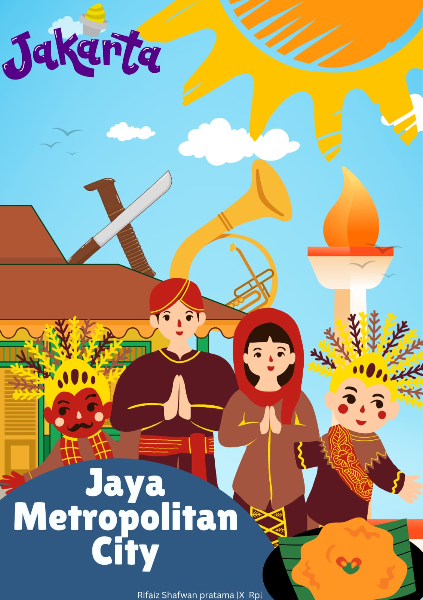
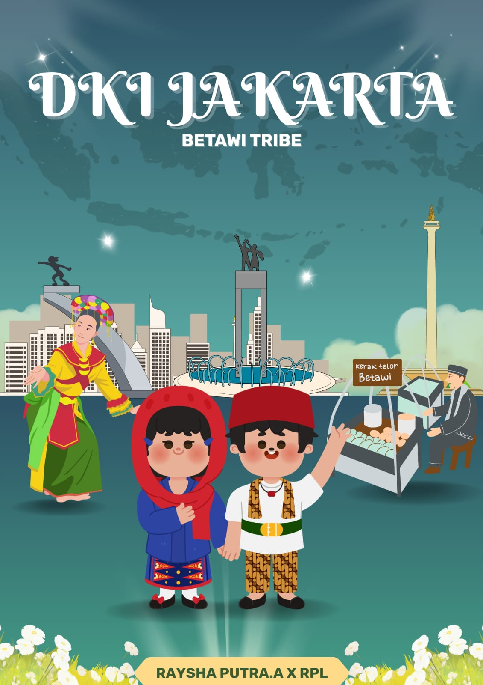
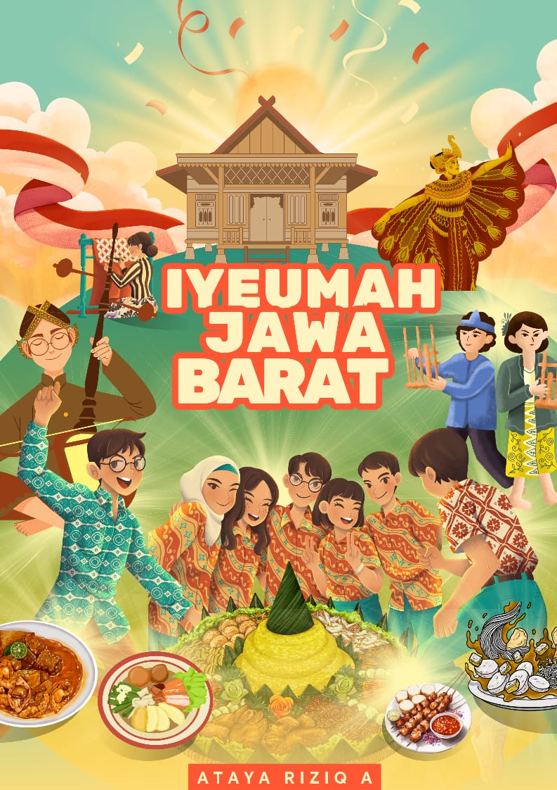

Eksplorasi Jawa Barat

Ubay Rafif Defanza(36)
Saya Cinta Dedi Mulyadi plis jangan kirim saya kebarak

Rifaiz Shafwan Pratama(35)
Saya Cinta Ahok dan dukung Anies

Rasya Ardiana Putra(35)
Saya dukung Jokowi jadi presiden kocak

Ataya Riziq Abimanyu(11)
Saya Cinta damai Ridwan kamil dan dedi mulyadi